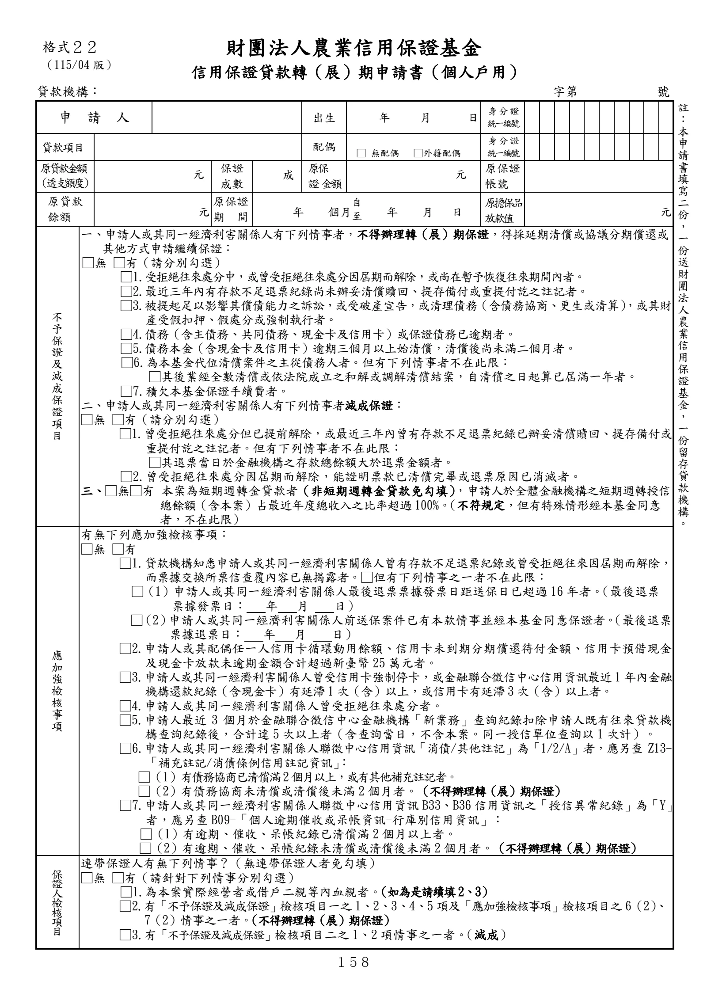

格式 22：信用保證貸款轉（展）期申請書（個人戶用）
手冊頁：158 PDF頁：170／203

查看PDF文字層
下列文字取自PDF既有文字層，僅供搜尋、複製與無障礙輔助。複雜表格的欄列位置可能失真，正式內容請以原頁預覽或PDF為準。
財團法人農業信用保證基金 信用保證貸款轉（展）期申請書（個人戶用） 貸款機構： 字第 號 申 請 人 出生 年 月 日 身 分 證 統一編號 貸款項目 配偶 □ 無配偶 □外籍配偶 身 分 證 統一編號 原貸 款 金額 （透 支 額度） 元 保證 成數 成 原保 證 金額 元 原保證 帳號 原貸款 餘額 元 原保證 期間 年 個月 自 至 年 月 日 原擔 保 品 放款 值 元 不 予 保 證 及 減 成 保 證 項 目 一、申請人或其同一經濟利害關係人有下列情事者，不得辦理轉（展）期保證，得採延期清償或協議分期償還或 其他方式申請繼續保證： □無 □有（請分別勾選） □1.受拒絕往來處分中，或曾受拒絕往來處分因屆期而解除，或尚在暫予恢復往來期間內者。 □2.最近三年內有存款不足退票紀錄尚未辦妥清償贖回、提存備付或重提付訖之註記者。 □3.被提起足以影響其償債能力之訴訟，或受破產宣告，或清理債務（含債務協商、更生或清算） ，或其財 產受假扣押、假處分或強制執行者。 □4.債務（含主債務、共同債務、現金卡及信用卡）或保證債務已逾期者。 □5.債務本金（含現金卡及信用卡）逾期三個月以上始清償，清償後尚未滿二個月者。 □6.為本基金代位清償案件之主從債務人者。但有下列情事者不在此限： □其後業經全數清償或依法院成立之和解或調解清償結案，自清償之日起算已屆滿一年者。 □7.積欠本基金保證手續費者。 二、申請人或其同一經濟利害關係人有下列情事者減成保證： □無 □有（請分別勾選） □1.曾受拒絕往來處分但已提前解除，或最近三年內曾有存款不足退票紀錄已辦妥清償贖回、提存備付或 重提付訖之註記者。但有下列情事者不在此限： □其退票當日於金融機構之存款總餘額大於退票金額者。 □2.曾受拒絕往來處分因屆期而解除，能證明票款已清償完畢或退票原因已消滅者。 三、□無□有 本案為短期週轉金貸款者（非短期週轉金貸款免勾填），申請人於全體金融機構之短期週轉授信 總餘額（含本案）占最近年度總收入之比率超過100%。（不符規定，但有特殊情形經本基金同意 者，不在此限） 應 加 強 檢 核 事 項 有無下列應加強檢核事項： □無 □有 □1.貸款機構知悉申請人或其同一經濟利害關係人曾有存款不足退票紀錄或曾受拒絕往來因屆期而解除， 而票據交換所票信查覆內容已無揭露者。□但有下列情事之一者不在此限： □（1）申請人或其同一經濟利害關係人最後退票票據發票日距送保日已超過16年者。（最後退票 票據發票日： 年 月 日） □（2）申請人或其同一經濟利害關係人前送保案件已有本款情事並經本基金同意保證者。（最後退票 票據退票日： 年 月 日） □2.申請人或其配偶任一人信用卡循環動用餘額、信用卡未到期分期償還待付金額、信用卡預借現金 及現金卡放款未逾期金額合計超過新臺幣 25萬元者。 □3.申請人或其同一經濟利害關係人曾受信用卡強制停卡，或金融聯合徵信中心信用資訊最近1年內金融 機構還款紀錄（含現金卡）有延滯1次（含）以上，或信用卡有延滯3次（含）以上者。 □4.申請人或其同一經濟利害關係人曾受拒絕往來處分者。 □5.申請人最近 3 個月於金融聯合徵信中心金融機構「新業務」查詢紀錄扣除申請人既有往來貸款機 構查詢紀錄後，合計達5次以上者（含查詢當日，不含本案。同一授信單位查詢以1 次計）。 □6.申請人或其同一經濟利害關係人聯徵中心信用資訊「消債/其他註記」為「1/2/A」者，應另查 Z13- 「補充註記/消債條例信用註記資訊」 ： □（1）有債務協商已清償滿2個月以上，或有其他補充註記者。 □（2）有債務協商未清償或清償後未滿2個月者。（不得辦理轉（展）期保證） □7.申請人或其同一經濟利害關係人聯徵中心信用資訊B33、B36信用資訊之「授信異常紀錄」為「Y」 者，應另查B09-「個人逾期催收或呆帳資訊-行庫別信用資訊」： □（1）有逾期、催收、呆帳紀錄已清償滿2個月以上者。 □（2）有逾期、催收、呆帳紀錄未清償或清償後未滿2個月者。（不得辦理轉（展）期保證） 保 證 人 檢核 項 目 連帶保證人有無下列情事？（無連帶保證人者免勾填） □無 □有（請針對下列情事分別勾選） □1.為本案實際經營者或借戶二親等內血親者。（如為是請續填2、3） □2.有「不予保證及減成保證」檢核項目一之1、2、3、4、5項及「應加強檢核事項」檢核項目之6（2）、 7（2）情事之一者。（不得辦理轉（展）期保證） □3.有「不予保證及減成保證」檢核項目二之1、2項情事之一者。（減成） 格式２２ （115/04 版） 註 ： 本 申 請 書 填 寫 二 份 ， 一 份 送 財 團 法 人 農 業 信 用 保 證 基 金 ， 一 份 留 存 貸 款 機 構 。